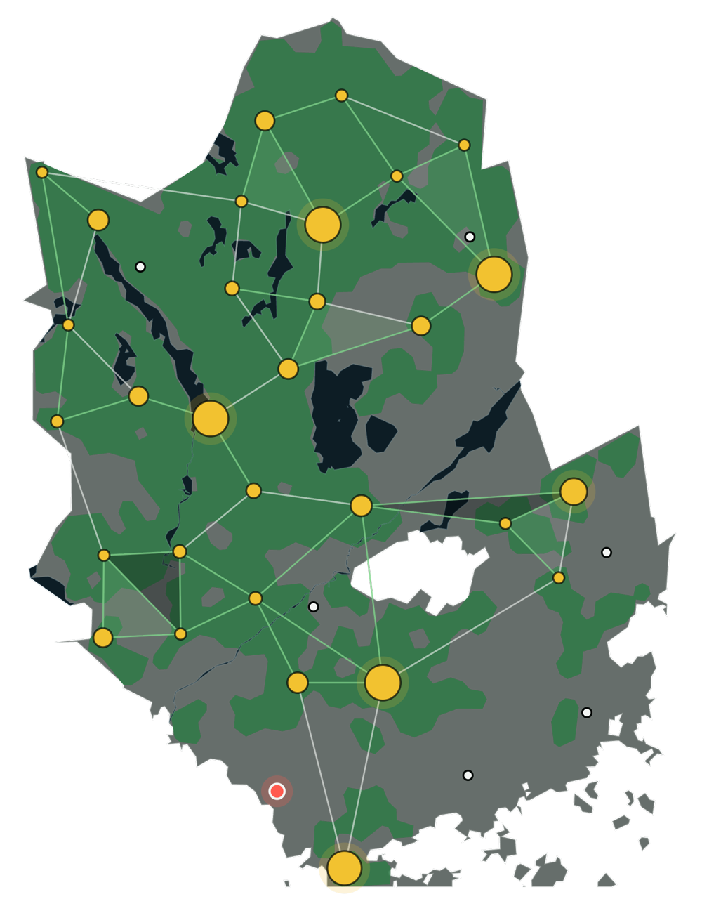

Team RBC · Junction 2026 · Arduino challenge
BirdAI
An Arduino-powered AI bird sensor capable of population and ecosystem tracking.
Basics
What
A feeder that counts its own birds using edge compute.
The prototype we built at Junction.
- Camera boom
- Roof
- Servo and wires
- Hatch and seed tray
- Birch stand
 12345
12345Why
Winter is the blind spot.
Birds are a bioindicator: when their numbers change, the ecosystem around them has changed. The EU already tracks bird numbers as an official measure of biodiversity, but almost only in summer.
A network of these feeders could change that: daily winter counts from every feeder, counted the same way across Europe, with no volunteer and no form.
Eurostat 2026 · Fraixedas et al. 2020 · Luomus
How
One Arduino does it all.
The camera, the model and the hatch all run on one UNO Q.
Photo
every 5 s
Model
0.5 s on the Arduino
Confirm
2 photos in a row
Count
largest seen at once
Hatch
shuts on squirrels
The AI
Why it runs on edge
The edge compute algorithm we built, running on the Arduino UNO Q.
Offline
No network needed.
Private
No photos leave the device.
Cheap
One board runs it all.
Fast
0.5 s per photo.
It can run in the middle of nowhere: no data connection, no mains power, no privacy concerns.
The model
Trained on our own feeder footage.
Implications
Separate sensors, linked into one network.
Each feeder sends a small table of counts. Put together, the tables show which birds winter where, day by day.
What the data is for
- MapSee where each species spends the winter, feeder by feeder, and how that shifts from one winter to the next.
- CompareEvery sensor counts by the rule Finland's national winter count uses, so numbers from different places and years can be compared.
- ActA drop in a species shows up within weeks, while there is still time to respond.

Illustration: sensors across Espoo. Bigger dot: more bird visits. Map data © OpenStreetMap contributors.